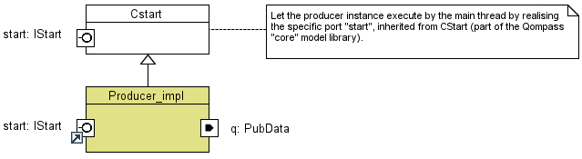
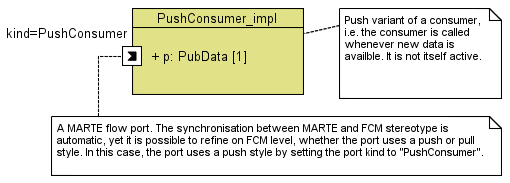
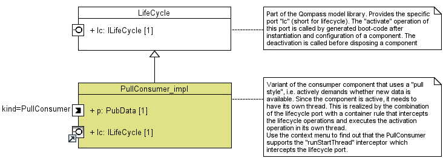
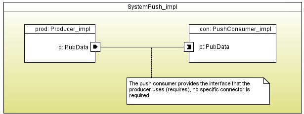
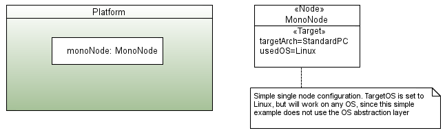
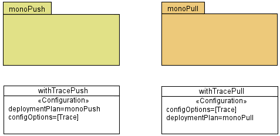

A simple producer-consumer example
In the sequel, we outline a simple producer consumer example using Qompass designer. Please note that the example
can be found via File->New->Example in the category Qompass examples. It follows the same principles as the
Hello World example, i.e. a separation between components, platform and deployment plan.
Definition of software components
The example consists of three components, a producer, a consumer and the enclosing system component. These components are outlined
in the sequel.
The producer
A data producer needs flow port of type "out" to communicate the data to other components. The following screenshot shows its
definition.

The producer is the main active component in our system. Therefore, it inherits (as the hello world component) from
the CStart component within the Qompass "core" modeling library and gets an initial execution thread. This thread executes the
component's "run" method is shown below. It executes 20 periods with a length of 200ms (we use only the simple POSIX call usleep
instead of the OS abstraction library to ensure that this example runs on most machines). In each period, an instance of type
PubData is send to the port q.
cout << "publish a value via port q;" << endl;
ComponentModel::interfaces::PubData data;
data.x = 2;
data.y = 3;
for (int i = 0; i<20; i++) {
q->push(data);
cout << "." << flush;
// wait 200ms
usleep(200*1000);
}
The consumer
There are (at least) two different variants to consume data. The first is to actively pull for new data, the second is being notified (pushed)
whenever new data arrives. Although both consumers have a flow-port of type in, the mapping towards provided and required
interfaces is quite different. Whereas the pull consumer calls a pull operation, the push consumer is called from the outside.
This also implies that the pull consumer has its own thread of control, which typically performs the poll with a certain period.
The following screenshot shows the push variant of the consumer. Since the component is inactive, no additional thread is required.
Data consumption at an "push-in" flow ports corresponds to the implementation of an interface with a push method. This interface
is automatically calculated and a derived (calculated) attribute of the port stereotyped with the FCM profile.

The next screenshot shows the pull variant of the consumer. This components inherits from the abstract LifeCycle component that
provides the lifecycle port. The interface associated with this port contains the two operations activate and deactivate. The
lifecycle operations are called after creation, but -- unlike the start call -- should return the control immediately (or after
a very short time).
Since we want that the consumer executes a periodic pull operation, we need to launch a new thread in the activation call and let
this thread execute the pull loop. One way to achieve this Qompass is to use a container service that intercepts the
activation call. This service is call runStartThread and is visible in the context menu of the class.

The system
Since we use two different variants of a consumer, we need to have two different variants of the system component.
The first variant uses a push consumer. In this case, producer and consumer can be connected directly, since the producer
calls the push operation that is provided by the consumer.

The variant with a pull consumer is a bit more complicated. In this case, both producer and consumer call operations (push and
pull respectively) and we need a mediator between this. A suitable choice is the use of a FIFO queue. The producer pushes data
into the FIFO and the consumer polls for data "at the other end". Instead of explicitly introducing an additional part for the
queue in the system, Qompass supports annotating UML connectors. In this case, we add the information to the connector between
producer and consumer that a FIFO connector should be used. When the code for this system is generated, Qompass replaces the
connection by a reified connector, as shown in the
reference guide

Definition of an abstract hardware platform
The hardware platform is the same monolithic platform as for the hello world example

Definition of a deployment plan
There are two deployment plans corresponding to the two variants to consume data. The screenshots below shows both plans
without detailing the contained instance specifications.
In addition to the two plans, there are two Configurations that enable activation of container extension. For
instance, the tracing rules are only active in a trace configuration. A configuration refers to a set of configuration
options and a deployment plan, as shown in screenshots.
